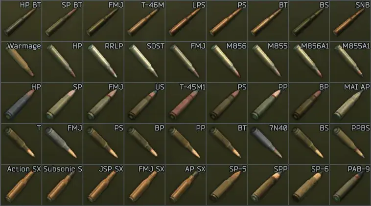
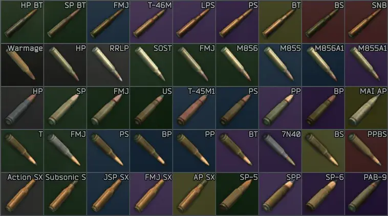

Easy Ammunition
- Downloads
- 31,096
- Favourites
- 24
- Mod lists
- 66
Easy Ammunition
This mod requires Color Converter API. Read the install tab below.
Assign background colours to ammunition items based on their penetration values. This allows players to quickly identify the best ammunition without having a PHD in ammunition engineering. This mod is a streamlined server-side adaptation of Faupi - Munitions Expert.
Vanilla Trash:

Easy Ammunition:

Vanilla SPT:
- Install Color Converter API.
- Decompress the contents of the download into your root SPT directory.
- Optionally, open the
SPT/user/mods/Refringe-EasyAmmunition/config.jsonfile to adjust configuration.
Fika
If you are using Fika, this mod must be installed into the Fika server, and the Color Converter API dependancy must be installed into every client that connects to the server. The Fika documentation has a page about setting required mods on a server. The line you’re probably looking to modify in your fika.jsonc is this:
"mods": {
"required": ["com.rairai.colorconverterapi.eft"],
"optional": []
},
If you are using the Fika headless client I’ve always assumed that the Color Converter API needs to be installed there as well. So… I can at least confirm that it doesn’t hurt. ツ
If you experience any problems, please submit a detailed bug report.
- @Faupi, for the original Munitions Expert mod.
- @CWX, for keeping Faupi’s mod updated in Faupi - Munitions Expert.
- @kikirio, for helping integrate this feature into the Faupi - Munitions Expert mod.
- @RaiRaiTheRaichu, for the awesome work on the Color Converter API.
This mod would not be possible without their work. Send them your love! ♥
♥
Version
2.0.0
Updates:
- Updated to support SPT v4.0
Notes:
- This version should be compatible with any SPT v4.0 release.
- Color Converter API is no longer optional. Get it.
Issues?
- If you experience any problems, please submit a detailed bug report.
♥
Dependencies
Version
1.4.2
Updates:
- Updated to support SPT v3.11
Notes:
- This version should be compatible with any SPT v3.11 release.
- Color Converter API enables darker background shades for higher penetration ammunition.
- The configuration file is in JSON5 format. The file extension is not a mistake. Do not rename it!
Issues?
- If you experience any problems, please submit a detailed bug report.
♥
Version
1.4.1
Updates:
- Updated to support SPT v3.10
- Drops ESLint and Prettier for Biome
Notes:
- This version should be compatible with any SPT v3.10 release.
- Color Converter API enables darker background shades for higher penetration ammunition.
- The configuration file is in JSON5 format. The file extension is not a mistake. Do not rename it!
Issues?
- If you experience any problems, please submit a detailed bug report.
♥
Version
1.4.0
Updates:
- Updated to support SPT v3.9
Notes:
- This version should be compatible with any SPT v3.9 release.
- Color Converter API enables darker background shades for higher penetration ammunition.
- The configuration file is in JSON5 format. The file extension is not a mistake. Do not rename it!
Issues?
- If you experience any problems, please submit a detailed bug report.
♥
Version
1.3.0
Updates:
- Updated to support SPT v3.8
Notes:
- This version should be compatible with any SPT v3.8 release.
- Color Converter API enables darker background shades for higher penetration ammunition.
- The configuration file is in JSON5 format. The file extension is not a mistake. Do not rename it.
Issues?
- If you experience any problems, please submit a detailed bug report.
♥
Version
1.2.0
Updates:
- Made updates for SPT v3.7 compatibility.
- Now compatible with RaiRaiTheRaichu’s Color Converter API for custom colours.
- Background colours in the same tier will become a shade darker depending on penetration.
- The configuration file structure has been updated. You can not use your old versions!
- Configuration file is now even more strictly validated.
- Refactored mod structure to be cleaner.
- Updated npm dependencies to be in-line with SPT core.
Notes:
- This version should be compatible with any SPT v3.7 release.
- The configuration file is in JSON5 format. The file extension is not a mistake. Do not rename it.
Issues?
- If you experience any problems, please submit a detailed bug report.
♥